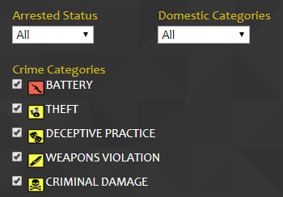

CHICAGO CRIME RECORDS
HOW TO USE
DASHBOARD
Dashboard page provides crime growth information and area safety levels. On top of the page, you will see a line chart, which represents three crimes' growth over years. These three crimes are the most occured crimes in current year. Below the line chart, you will see a heatmap that can be customized. You can set the weight of each crime using the slider. See figure below.

These crimes are used as safety index. The safer an area is, the greener it gets. We hope it is helpful for you to find the best area.
Why Heatmap
This map is useful for many purposes, such as:
- Finding the best (in this case: safest) area for living
- Finding the most dangerous area to place more officers
- Analysing areas safety based on crime categories
CRIME MAP
To use the map, you have to select time range on the right side of the page and then click Filter.

Once the map is shown, you can explore and use other fiters, such as Arrested Status, Domestic Categories, and Crime Categories
On the map you will see bubbles with number. These bubbles' number represent number of crimes occured in particular area. To zoom in, simply click a bubble. When a bubble is clicked, the map will be zoomed in and the bubble will break down into smaller bubbles. In some point, you will see icons like these.
Click the icon to see more detail about the crime.